Florence, Kentucky
Books, prayer aids, and sacramentals — plus gifts and treasures from local artists. Come visit us at our home on US Highway 42.
What We Offer
From first Communion gifts to statues for the garden, our shelves are filled with items to nourish faith at every stage of life.
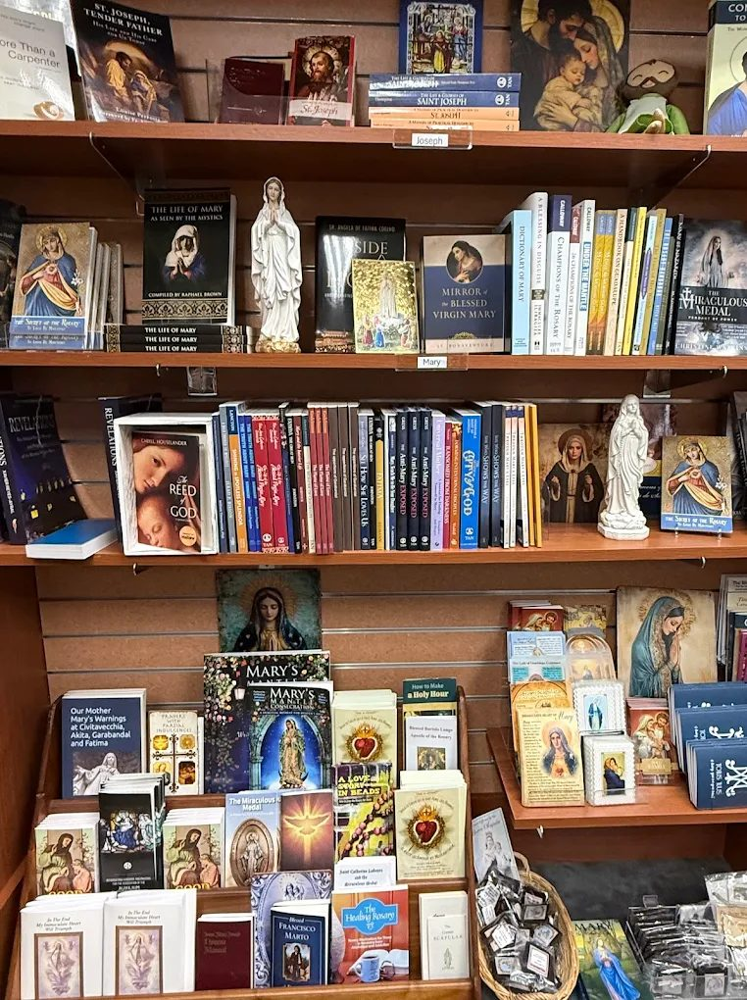
Scripture, saints' biographies, catechism, prayer, and children's books — carefully curated for every stage of the faith journey.
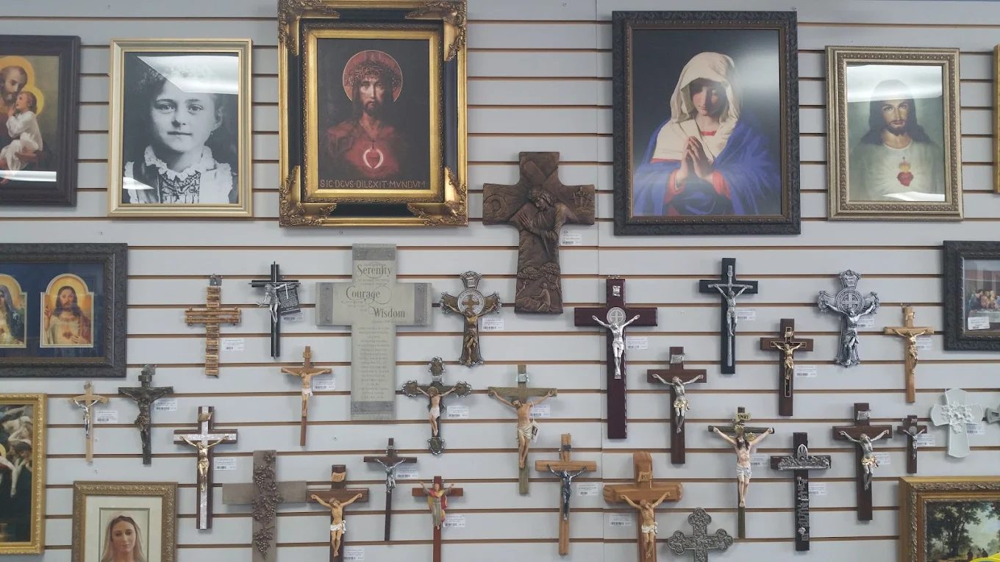
Crucifixes, crosses, and framed sacred art in a wide range of styles and sizes, for the home, car, or as a meaningful gift.
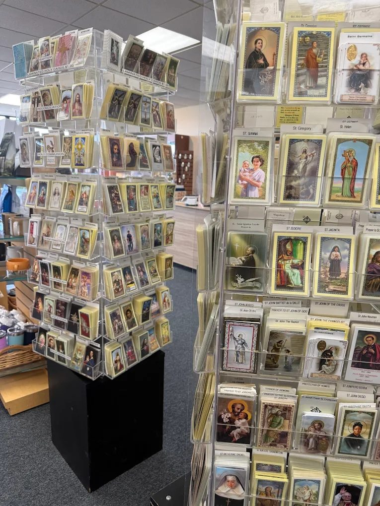
Holy cards, novenas, rosaries, and devotional aids organized by saint — easy to find exactly who or what you're looking for.
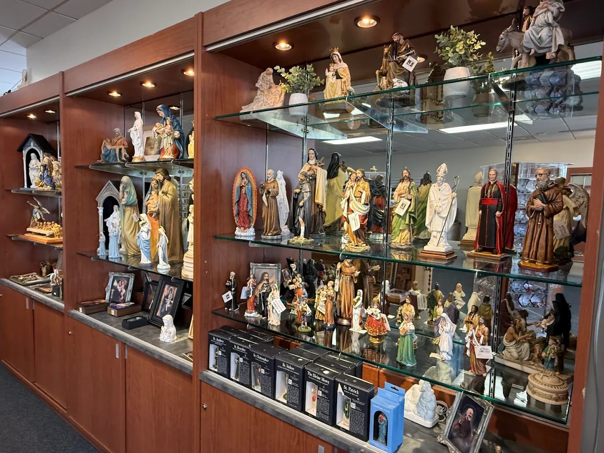
Statues of the Holy Family, saints, and angels in a range of finishes and sizes — indoor pieces and outdoor garden statuary alike.
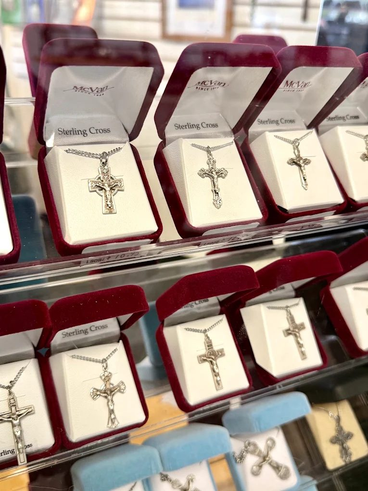
Sterling silver crosses, crucifix pendants, medals, and rosaries — beautifully boxed and ready to give as a gift.
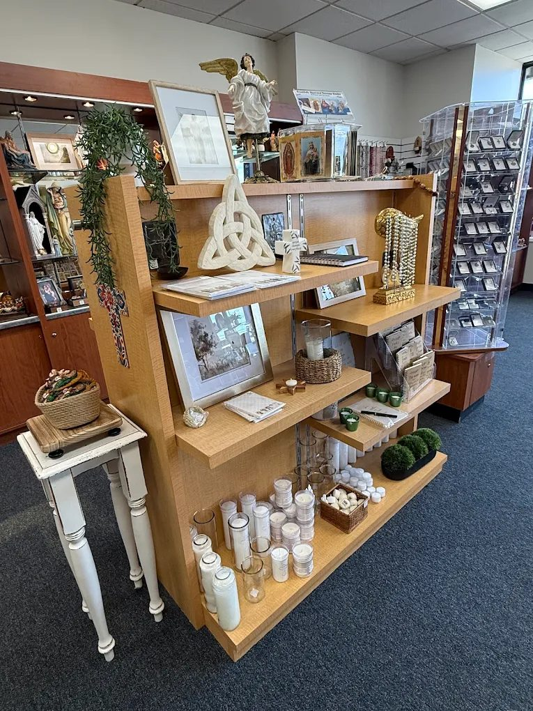
Candles, keepsakes, and one-of-a-kind pieces from local artists — thoughtful gifts you won't find anywhere else.
About Us
Ave Maria Books & Gifts has served Catholic families throughout Northern Kentucky for years, offering a warm, welcoming place to find books, prayer aids, and sacramentals for every occasion. Since October 2017, we've been located at the corner of US Highway 42 and Weaver (Hopeful Church Rd) in Florence — right next to Weaver Dental, and near Emerson Bakery and Burger King.
Beyond books and sacramentals, we're proud to carry a variety of gifts, including items from local artists. Whatever brings you in — a First Communion, a Confirmation, a Baptism, or simply a moment to browse — we hope you'll find something that speaks to your faith.
Plan Your Visit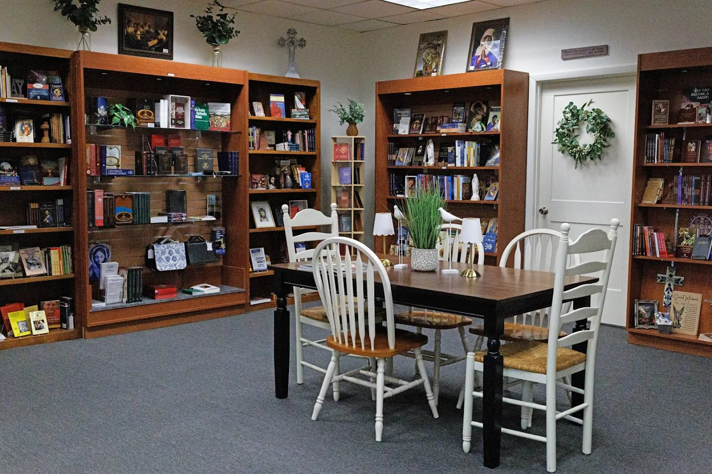
A Peek Inside Our Store
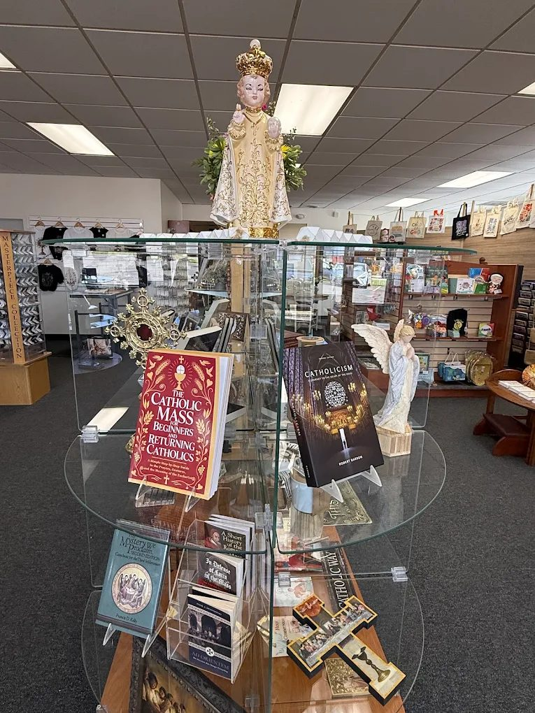
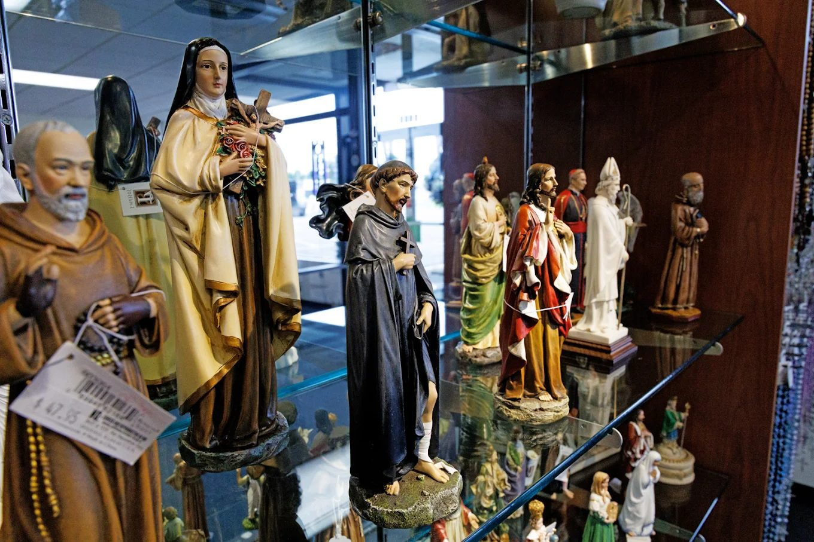
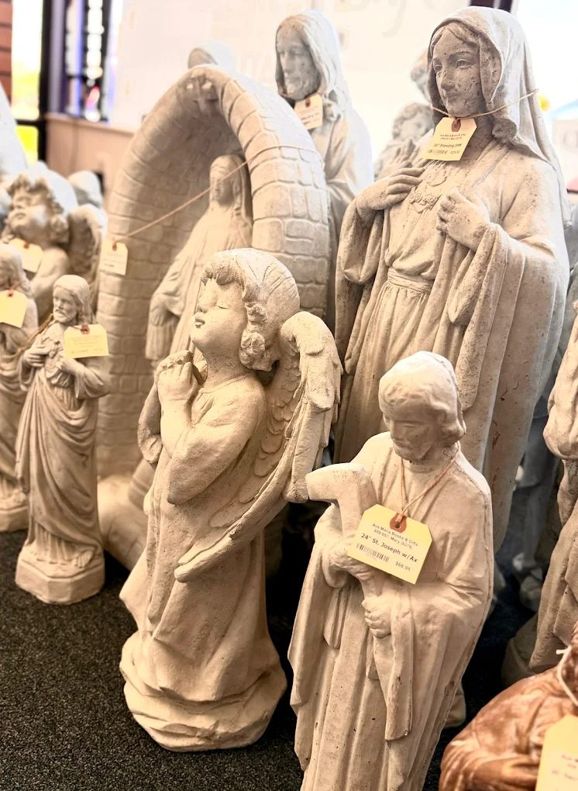
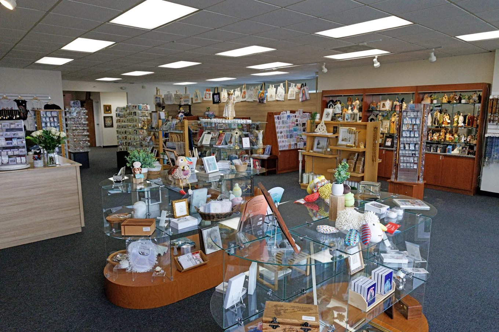
Visit Us
8437 US Highway 42
Florence, KY 41042
At the corner of US Highway 42 and Weaver (Hopeful Church Rd) — next to Weaver Dental, near Emerson Bakery and Burger King.
| Monday | 10 AM – 5 PM |
| Tuesday | 10 AM – 5 PM |
| Wednesday | 10 AM – 5 PM |
| Thursday | 10 AM – 5 PM |
| Friday | 10 AM – 5 PM |
| Saturday | 10 AM – 2 PM |
| Sunday | Closed |